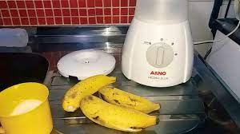

VAMOS FAZER UMA VITAMINA DE BANANA?
Primeiro, antes de tudo; vamos separar os materias:

- Liquidificador (com tapa).
- Leite (2 copos cheios).
- Três bananas (de sua preferência).
- Açúcar (1/5 colher de sopa pequena).
- Gelo (cubos pequenos).
- Dois Iogurte de banana (potinho, caso não do pequeno e só do grande
coloque
6 colheres iogurte - colher de sopa ).
Vamos começar a prparar. Ta pronto?
- Pegue o Liquidificador põe sobre a mesa (ou pia) e retire a tampa
- Despeje o leite (sim, os dois copos.)
TENHA CUIDADO para não fazer muita bagunça). - Logo em seguida, descasque as bananas e com auxiliar de uma faca:
corte - as ao meio e coloque no Liquidificador. - Agora, pegue uma colher e vai colocando as colheres de açúcar na contidade que foi informado.
- É o momento do iogurte. Abra a embalagem do mesmo e despeje o conteudo dentro do Liquidificador, lembrando caso não tenhas o potinho e só do grande, usar a medida de 6 colheres de sopa).
- Antes de liga-lo: feche - o com a tampa (caso não tenha uma tampa apropriada, utiliza algo como: prato ou até mesmo uma tampa de panela que encaixe na parte superior do Liquidificador (não tem probelma se o prato ou a tampa for maior que a extremidade superior do Liquidificador, certifique-se que não fazará quando o mesmo estive ligado)).
- Já com a tampa ou utilitário escolhido posicionado para fechar a parte superior do Liquidificador, é a hora de pegar a tomada e conecta-la a alguma tomada próxima.
- Achou? Se sim, ligue e põe na velocidade que achar melhor - deixe ligado por 30 segundos. Se não, ache uma tomada próximo e conecta (não esquece de deixar i Liquidificador em um lugar que não caia).
- Passou os 30 segundos, deligue, abra a tampa e verifique se está na consistencia que goste - caso não, põe a tampa de novo (ou o utilitário escolhido) e bate por mais alguns segundos até ficar na consistencia preferida. Pode colocar mais banana para engrossar, se for o caso.
- Pegue um copo e despeje a vitamina nele.
Com os ingredientes já posto no Liquidificador é a hora de bater.